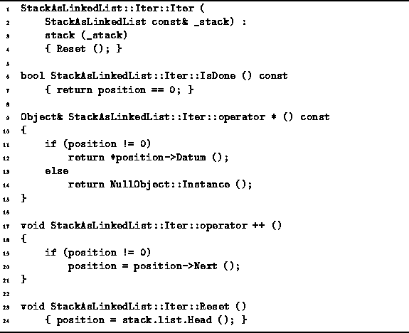

Data Structures and Algorithms
with Object-Oriented Design Patterns in C++
Data Structures and Algorithms
with Object-Oriented Design Patterns in C++
The StackAsLinkedList::Iter class
is declared in Program  .
Since the StackAsLinkedList::Iter class
is declared as a friend of the StackAsLinkedList class
the member functions of the former
can access the private member variables of the latter.
Consequently, the implementation of the iterator
depends on the implementation of the container.
.
Since the StackAsLinkedList::Iter class
is declared as a friend of the StackAsLinkedList class
the member functions of the former
can access the private member variables of the latter.
Consequently, the implementation of the iterator
depends on the implementation of the container.

Program: StackAsLinkedList::Iter Class Member Function Definitions
StackAsLinkedList::Iter objects have two member variables, stack and position. The former is a reference to a StackAsLinkedList instance. The latter is declared as a ListElement<Object*> const*, i.e, a pointer to a const element of a linked list of pointers to Objects.
The StackAsLinkedList::Iter constructor simply calls the Reset member function. The Reset function makes position point at the first element of the linked list which represents the stack, by calling the Head function of the LinkedList<T> class. Clearly the running time of the constructor is O(1).
The IsDone member function simply tests for the null pointer. If the position variable is zero, IsDone returns true. Again, the running time is clearly O(1).
The dereferencing operator, operator*, does what its name says! It returns a const reference to the object obtained by dereferencing the object pointer contained in the list element to which the position variable points. This takes O(1) time. Note that if pointer is zero, a reference to the NullObject instance is returned.
Finally, the increment operator, operator++, advances the position pointer to the next element of the linked list. This is done by calling the Next function of the ListElement<T> class. This too is accomplished in constant time.
Because the interface of the StackAsLinkedList class is exactly the same as that of the StackAsArray class, StackAsLinkedList objects can be used in exactly the same way as their array-based counterparts:
StackAsLinkedList stack;
stack.Push (*new Int (3));
stack.Push (*new Int (1));
stack.Push (*new Int (4));
Iterator& i = stack.NewIterator ();
while (!i.IsDone ()) {
cout << *i << endl;
++i;
}
delete &i;
This program fragment declares the variable stack,
pushes several values onto the stack,
and then uses an iterator to systematically print out all
of the elements contained in the stack.
 Copyright © 1997 by Bruno R. Preiss, P.Eng. All rights reserved.
Copyright © 1997 by Bruno R. Preiss, P.Eng. All rights reserved.